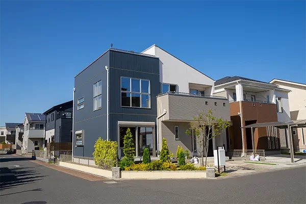
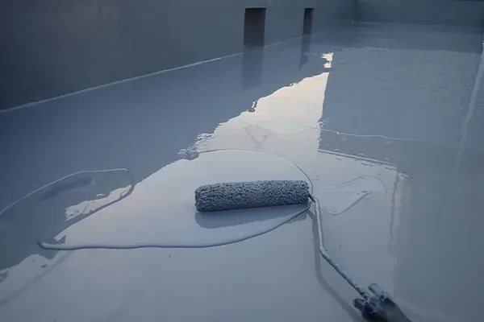

お客様の声
ペンキ塗総業に塗り替えをご依頼いただいたお客様から、たくさんのうれしいお声をいただいています。

Googleの口コミ評価
Googleマップにも、多くのお客様から口コミをいただいています。ありのままの評価を、ぜひご覧ください。
Googleの口コミを見る※評価・件数は仮の数字です。
お客様からいただいた声
地域・工事内容もあわせてご紹介します。お住まいの参考にご覧ください。
見積書がとても細かく、どこに何の費用がかかるのか一目で分かったのが決め手でした。毎日の報告書で、仕事中でも工事の様子が分かって安心。完成後にいただいた動画は、家族の宝物です。
3つのプランを丁寧に比べながら説明してくれたので、納得して選べました。ご近所へのご挨拶もしっかりしてくださり、工事中も気持ちよく過ごせました。仕上がりにも大満足です。
職人さんが直接見に来てくれて、屋根の状態を写真で見せながら説明してくれました。押し売りが一切なく、相談しやすかったです。夏の2階の暑さが和らいだのもうれしいポイントです。

何社かに相談しても直らなかった雨漏りを、原因から突き止めて直してくれました。調査の写真を見せてもらい納得してお願いできました。今は安心して雨の日を過ごせています。
外壁と一緒に門扉とフェンスもお願いしました。色を合わせたことで家全体がぐっと引き締まり、ご近所からもきれいになったねと声をかけられます。細部まで丁寧な仕事でした。

交換の見積もりが高くて困っていたところ、浴槽塗装を提案してもらいました。費用は大幅に抑えられたのに、仕上がりは新品同様。次の入居者もすぐに決まり、とても助かりました。

子どもが小さいので工事中の安全が心配でしたが、毎日きれいに片付けてくださり、声もかけてくれて安心でした。色選びの相談にも何度ものってくださり、感謝しています。
ベランダの真下の部屋に雨染みができて困っていました。原因を丁寧に説明してもらい、防水工事のあとは一度も雨漏りしていません。対応も早く、本当に頼りになります。

初めての塗り替えで分からないことばかりでしたが、質問に一つひとつ丁寧に答えてくださいました。職人さんが直接担当してくれるので話が早く、信頼してお任せできました。
Story動画をもらった感想
施工の一部始終をまとめた動画のプレゼント。いただいた感想の一部をご紹介します。

石岡市 M様
「足場の中でこんなに丁寧に作業してくれていたなんて。動画を見て、改めて感謝の気持ちがわきました」
笠間市 K様
「離れて暮らす息子夫婦に送ったら、とても喜んでくれました。家の思い出がひとつ増えた気がします」
土浦市 S様
「子どもが『おうちが変身した！』と何度も見ています。家族みんなのお気に入りの動画です」
お客様インタビュー
「家族で迷った時間も、
今ではいい思い出です」
- 塗り替えを考えたきっかけは？
- 築18年がたち、外壁を触ると手が白くなるようになって。近所で塗装工事をしている家が増えたこともあり、そろそろかなと思いました。
- ペンキ塗総業を選んだ理由は？
- 3社にお見積りをお願いしましたが、缶数まで書いてある見積書はここだけでした。職人さんが直接説明してくれて、質問にもその場で答えてくれたのが安心材料でしたね。
- 工事中の印象はいかがでしたか？
- 毎日報告書が届くので、共働きでも様子がよく分かりました。毎日きれいに片付けてくださって、ご近所からも「感じのいい職人さんね」と言われたほどです。
- 完成した感想を教えてください。
- 色選びは家族で何度も悩みましたが、大きな見本を外で見比べられたので、イメージどおりのグレージュになりました。Story動画は、娘が結婚して家を出るときにも一緒に見返したいと思っています。
プレゼント中
まずは無料診断から。
お住まいの気になるところ、まずはお気軽にご相談ください。職人が直接うかがい、無料で診断・お見積りいたします。
 写真を送るだけで概算もOK
写真を送るだけで概算もOKお見積り